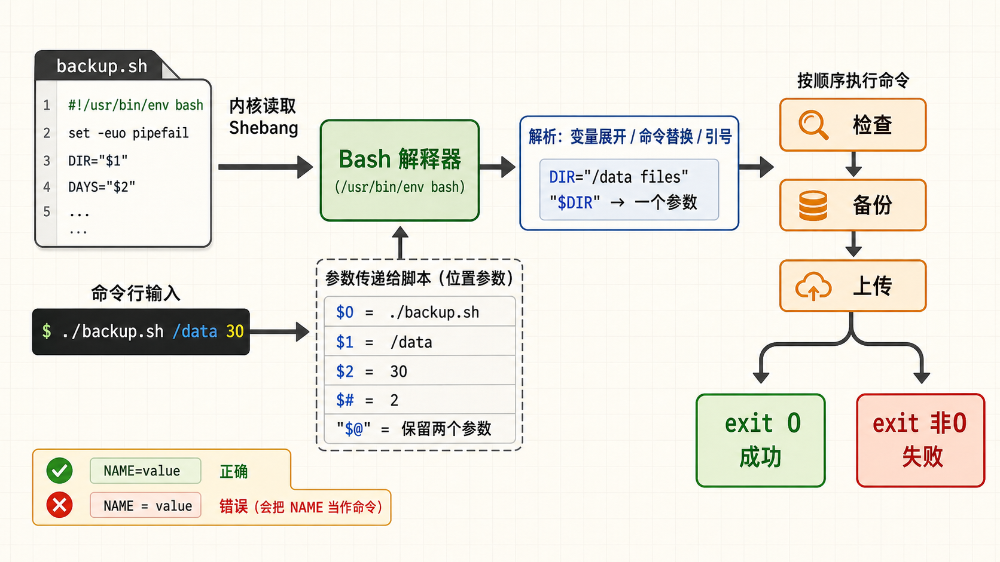
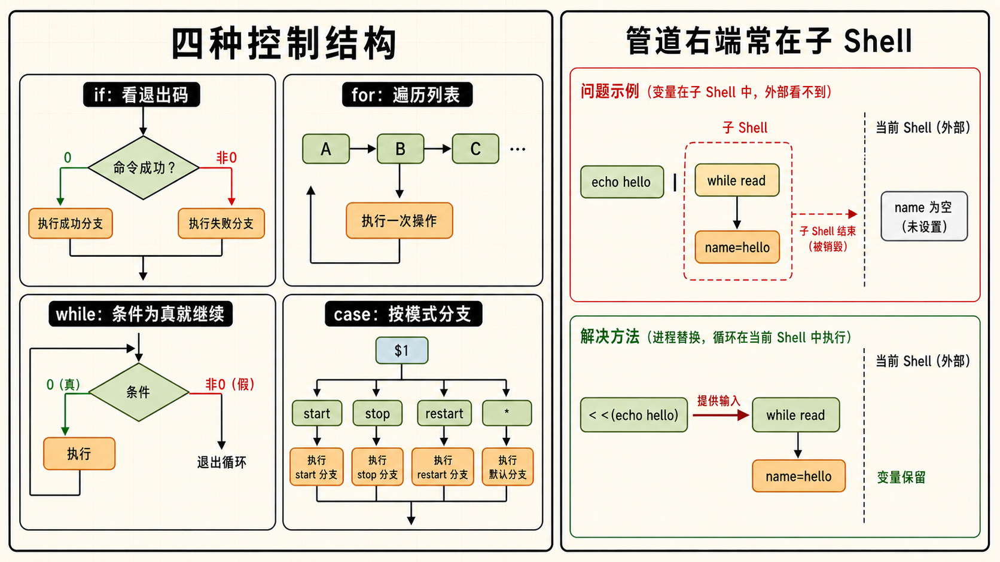
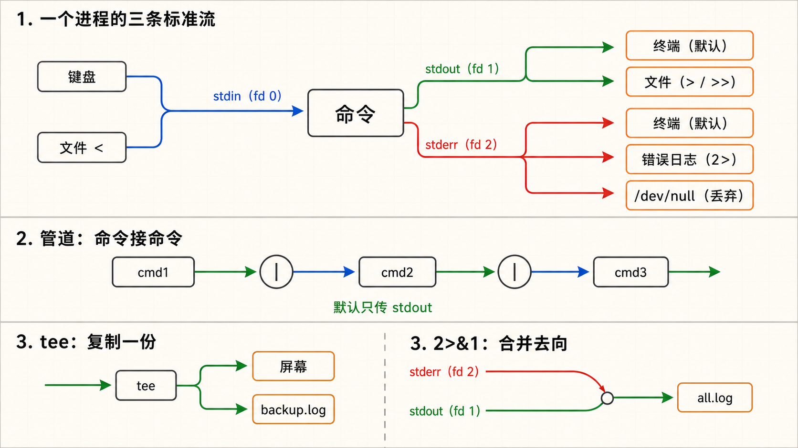
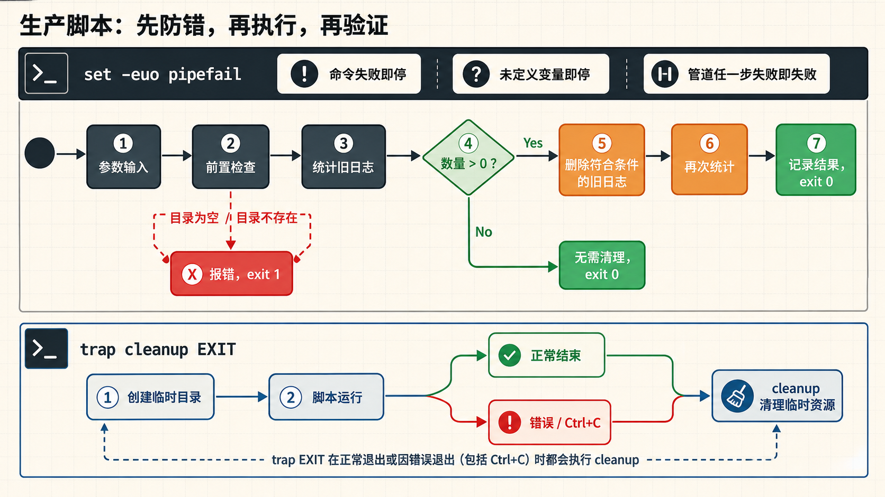

1为什么需要脚本
从"每天敲一百遍同样的命令"到"一次编写，无限复用"
入门Shell 脚本的本质
把你在终端里手动输入的命令按顺序写进一个文本文件，再加上一些条件判断、循环和变量——这个文件就是 Shell 脚本。它不需要安装任何运行时（Bash 解释器已经在你的系统里了），不需要编译，写完 chmod +x 加上可执行权限就能跑。它是运维自动化的基石——所有批量操作、定时任务、部署流程的第一站都是 Shell 脚本。
一个场景，两种人生
需求：每天凌晨 3 点备份 MySQL 数据库，gzip 压缩，上传到远程备份服务器，删除 7 天前的旧备份，最后发邮件汇报结果。
没有脚本：你设了凌晨 2:55 的闹钟，爬起来依次敲 5 条命令。敲到第 3 条发现 mysqldump 报错——磁盘空间不足。排查到 4 点，发邮件给领导说备份失败。
有脚本：写一个 backup.sh，封装全部步骤，加上磁盘检查、错误处理、日志记录。cron 定时执行，你在睡觉。失败了自动发告警邮件，成功了给你发日报摘要。
#!/bin/bash
# 这就是一个最简脚本——把你要做的事逐行写出来
echo "===== 备份开始 ====="
BACKUP_FILE="/backup/mydb_$(date +%Y%m%d).sql.gz"
mysqldump -u root mydb | gzip > "$BACKUP_FILE"
echo "备份完成：$BACKUP_FILE"
scp "$BACKUP_FILE" backups@remote:/backups/
echo "远程上传完成"
# crontab: 0 3 * * * /opt/scripts/backup.sh >> /var/log/backup.log 2>&1- 依赖较少：多数通用 Linux 发行版预装 Bash，但精简容器和嵌入式系统可能只有 POSIX
sh；执行前用command -v bash确认。 - 与系统深度集成：直接调用系统命令（ls、grep、awk、systemctl），不需要任何绑定库。
- 天然管道思维：Shell 的设计哲学就是"小工具组合成大系统"——一个命令的输出就是下一个的输入，数据在管道中流动。
2Shebang 与变量
脚本的 DNA——第一行决定了脚本的命运
基础Shebang —— #! 不是注释
脚本第一行的 #!/bin/bash 称为 Shebang，直接执行文件时内核据此选择解释器；#!/usr/bin/env bash 则通过当前 PATH 查找 Bash。若直接执行的脚本缺少 Shebang，行为取决于调用它的 shell 或程序，不能假定使用登录 shell；而 bash script.sh 会明确由 Bash 解释。要让脚本可移植、可预测，请写明与语法相符的解释器，并检查目标机器是否安装。
#!/bin/bash
# #!/usr/bin/env bash ← 可移植写法（在 PATH 中找 bash）
# #!/bin/sh ← POSIX 兼容模式（功能少于 bash）变量 —— 给数据起个名字
变量就是给一个值取个名字，方便反复使用。定义变量时 = 两边不能有空格——这是新手最常犯的错误之一。
# 定义变量（等号两边不能有空格！）
NAME="production-server"
PORT=8080
TIMESTAMP=$(date +%Y%m%d_%H%M%S) # 命令替换：把命令的输出赋给变量
# 使用变量：$NAME 或 ${NAME}（花括号不是必须但推荐）
echo "Server: $NAME"
echo "Port: ${PORT}"
echo "Backup file: backup_${TIMESTAMP}.tar.gz"
# 如果不用花括号：$TIMESTAMP.tar.gz 会被解释为变量 "TIMESTAMP.tar.gz"▶ 执行结果
Server: production-server
Port: 8080
Backup file: backup_20260731_143000.tar.gz命令行参数（$1, $2, ...）与特殊变量
脚本可以通过参数接收外部输入，实现"一次编写、不同场景复用"。
| 变量 | 含义 | 示例 |
|---|---|---|
$0 | 脚本自身的名字 | ./backup.sh |
$1 | 第 1 个命令行参数 | ./backup.sh /data → $1=/data |
$2 ~ $9 | 第 2 ~ 9 个参数 | 更多参数用 ${10} ${11} |
$# | 参数总个数 | ./script.sh a b c → $#=3 |
$@ | 所有参数（每个作为独立字符串） | "$@" 保留原始分隔 |
$* | 所有参数（合并为单个字符串） | 通常不推荐使用 |
$? | 上一条命令的退出码 | 0=成功，非0=失败 |
$$ | 当前 Shell 的 PID | 用于创建唯一临时文件名 |
#!/bin/bash
# 使用参数和参数默认值
BACKUP_DIR="${1:-/backup}" # 第1个参数，如果没传则默认 /backup
DAYS="${2:-7}" # 第2个参数，默认 7
echo "备份目录: $BACKUP_DIR"
echo "保留天数: $DAYS"
echo "参数总数: $#"
echo "脚本名: $0"
# 检查参数是否足够
if [[ $# -lt 1 ]]; then
echo "用法: $0 <备份目录> [保留天数]"
exit 1
fi▶ 执行演示
$ ./script.sh /data/backup 30
备份目录: /data/backup
保留天数: 30
参数总数: 2
脚本名: ./script.sh
$ ./script.sh
备份目录: /backup
保留天数: 7
参数总数: 0
脚本名: ./script.sh退出码 —— 成功或失败，用数字说话
Linux 世界里每个命令执行完都要报告一个"状态"——退出码（Exit Code）。0 代表成功，非 0 代表失败。$? 能立刻读取上一个命令的退出码。
ls /tmp
echo $? # 输出 0 —— 成功
ls /non_existent_dir
echo $? # 输出 2 —— 失败（目录不存在）
# 在脚本里可以显式设置退出码
if [[ ! -f "$CONFIG_FILE" ]]; then
echo "配置文件 $CONFIG_FILE 不存在！"
exit 1 # 以失败状态退出
fi
exit 0 # 一切正常，正常退出DIR="my files"，cd $DIR 会变成 cd my files（两个参数），报错。正确的写法是 cd "$DIR"。养成习惯：除了极少数需要单词拆分（word splitting）的场景外，变量引用一律加双引号。
3if / for / while / case
四种控制结构——让脚本有"判断力"和"循环力"
核心if 判断 —— 条件成立才执行
Shell 的 if 和普通编程语言不一样——它判断的不是"表达式是 true 还是 false"，而是"命令是否执行成功（退出码是不是 0）"。因为 [ 本身就是一个命令（等价于 test），而 [[ ]] 是 Bash 内部关键字（更快、更安全、支持正则）。
#!/bin/bash
# 使用 [[ ]] 不用 [ ]——支持正则、不会因变量为空报错
DISK_USAGE=$(df / | awk 'NR==2 {print $5}' | sed 's/%//')
if [[ $DISK_USAGE -gt 80 ]]; then
echo "磁盘使用率 ${DISK_USAGE}%，空间不足！"
exit 1
elif [[ $DISK_USAGE -gt 60 ]]; then
echo "磁盘使用率 ${DISK_USAGE}%，注意监控。"
else
echo "磁盘空间充足。"
fi常用条件测试速查
| 测试表达式 | 什么时候为真 |
|---|---|
[[ -f file ]] | file 存在且是普通文件 |
[[ -d dir ]] | dir 存在且是目录 |
[[ -z "$str" ]] | str 是空字符串 |
[[ -n "$str" ]] | str 不是空字符串 |
[[ "$a" == "$b" ]] | 两个字符串相等 |
[[ "$a" != "$b" ]] | 两个字符串不相等 |
[[ "$a" =~ regex ]] | 字符串匹配正则（Bash 特有） |
[[ -x file ]] | file 有可执行权限 |
[[ $a -gt $b ]] | a 数字大于 b（-ge大于等于，-lt小于，-le小于等于，-eq等于） |
[[ $a -gt $b ]] | a 数字大于 b（-ge大于等于，-lt小于，-le小于等于，-eq等于） |
for 循环 —— 遍历列表逐一处理
for 循环用于对一个列表中的每个元素执行相同的操作。这是批量处理的核心武器。
# 遍历文件列表
for logfile in /var/log/*.log; do
echo "正在压缩: $logfile"
gzip "$logfile"
done
echo "全部日志文件压缩完成"
# C 风格的三循环（精确控制循环次数）
for ((i=1; i<=10; i++)); do
echo "第 ${i} 次尝试连接..."
nc -z localhost 3306 && break
sleep 2
done
# 花括号展开生成范围
for port in {8080..8085}; do
echo "检查端口 $port ..."
nc -z localhost "$port" && echo " -> 已监听" || echo " -> 未监听"
done▶ 执行结果（端口检查）
检查端口 8080 ...
-> 已监听
检查端口 8081 ...
-> 未监听
检查端口 8082 ...
-> 已监听while 循环 —— 条件满足就一直执行
while 适合"持续等待直到某个条件满足"的场景。最经典的用法是逐行读取文件和等待服务就绪。
# 安全的逐行读取文件（IFS= 保留行首空白，-r 保留反斜杠）
while IFS= read -r line; do
echo "读取到: $line"
done < /etc/hosts
# 等待数据库启好
echo "等待 MySQL 启动..."
while ! nc -z localhost 3306; do
sleep 2
done
echo "MySQL 已就绪！"case 多条件分支 —— 比 if-elif 更优雅
case 适合"多种可能"的选择场景。最经典的用例是写服务管理脚本和参数解析。
#!/bin/bash
# 服务管理脚本模板
case "$1" in
start)
echo "启动服务..."
systemctl start myapp
;;
stop)
echo "停止服务..."
systemctl stop myapp
;;
restart)
echo "重启服务..."
systemctl restart myapp
;;
status)
systemctl status myapp
;;
*)
echo "用法: $0 {start|stop|restart|status}"
exit 1
;;
esacecho "hello" | while read line; do name=$line; done; echo $name 中，最后的 echo 输出是空——因为 name 是在子 Shell 里赋值的，外面拿不到。解决办法：用进程替换 while read line; do name=$line; done < <(echo "hello"); echo $name。
4函数
把"套路"封装起来——重复逻辑一次写、到处用
结构化为什么需要函数
写脚本时你会发现某些操作反复出现：打印带时间戳的日志、检查文件是否存在、发送告警通知。把这些操作写成一个函数，取名后直接调用——就像木匠把常用工具放在一个工具箱里，每次干活前拎出来就行。
函数定义与调用
#!/bin/bash
# 函数定义——两种写法都可以
log() {
local level="${1:-INFO}" # local 声明局部变量，不影响外部
local message="$2"
echo "[$(date '+%Y-%m-%d %H:%M:%S')] [${level}] ${message}"
}
# 第二种写法（function 关键字可以省略）
function die() {
log "FATAL" "$1"
exit 1
}
# 调用函数（函数内 $1 $2 对应函数调用时的参数，不是脚本参数）
log "INFO" "备份任务开始"
log "WARN" "磁盘使用率偏高: 75%"
if [[ ! -d "/backup" ]]; then
die "备份目录 /backup 不存在！"
fi▶ 执行结果
[2026-07-31 14:30:00] [INFO] 备份任务开始
[2026-07-31 14:30:00] [WARN] 磁盘使用率偏高: 75%
[2026-07-31 14:30:00] [FATAL] 备份目录 /backup 不存在！函数的"返回值"——两种方式
# 方式1：return 退出码（只能是数字 0-255）
check_disk() {
local usage=$(df "$1" | awk 'NR==2 {print $5}' | sed 's/%//')
if [[ $usage -gt 80 ]]; then
return 1 # 失败返回
fi
return 0 # 成功返回
}
# 方式2：echo 输出数据（调用者用 $(...) 捕获）
get_top_ip() {
local logfile="$1"
awk '{print $1}' "$logfile" | sort | uniq -c | sort -rn | head -1
}
top_ip=$(get_top_ip /var/log/nginx/access.log)
echo "访问最多的 IP: $top_ip"source —— 把公共函数拆到独立文件
多个脚本都需要日志函数和错误处理——复制粘贴三份？改一处要改三处。把公共函数抽到一个 lib/common.sh 里，每个脚本 source（或 .）引入即可。
# lib/common.sh —— 公共函数库
#!/bin/bash
log() { echo "[$(date '+%H:%M:%S')] $*"; }
fatal() { echo "[$(date '+%H:%M:%S')] FATAL: $*" >&2; exit 1; }
check_deps() {
for cmd in "$@"; do
command -v "$cmd" &>/dev/null || fatal "$cmd 未安装！"
done
}
# main.sh —— 业务脚本
#!/bin/bash
source "$(dirname "$0")/lib/common.sh" # 引入公共库
check_deps curl jq
log "依赖检查通过，开始执行主逻辑..."5重定向与管道
数据流往哪走——Linux 最强大的设计理念
核心三个标准流：stdin(0) / stdout(1) / stderr(2)
每个 Linux 进程启动时，内核自动给它分配三个"数据通道"：
- stdin（标准输入，fd=0）：数据从哪里来。默认是键盘，可以重定向从文件来。
- stdout（标准输出，fd=1）：正常数据往哪去。默认是终端屏幕，可以重定向到文件。
- stderr（标准错误，fd=2）：错误信息往哪去。默认也是终端屏幕，但可以单独处理。
重定向就是改变这些数据通道的指向——把输出从屏幕改到文件，把输入从键盘改到文件。
输出重定向——把结果存下来
# > 覆盖重定向（清空目标文件，写入新内容）
ls /etc > etc_files.txt # 清空 etc_files.txt，再写入
# >> 追加重定向（在目标文件末尾追加，不覆盖）
echo "--- $(date) ---" >> backup.log
# 2> 重定向错误输出
find / -name "*.log" 2> /dev/null # 把 Permission denied 的错误丢掉
# &> 同时重定向 stdout + stderr 到同一个文件
./backup.sh &> backup_full.log
# 2>&1 把 stderr 合并到 stdout（写脚本时最常用的模式）
./backup.sh > backup.log 2>&1 # 正常和错误都进 backup.log2>&1 解读： 2 = stderr > = 重定向到 &1 = 文件描述符 1（stdout） 最终效果：stderr 的输出和 stdout 走同一条路
/dev/null —— 黑洞
/dev/null 是一个特殊设备文件，写入它的任何内容都会被丢弃，读取它返回 EOF。需要"安静地执行命令，不管输出和错误"时就用它。
# 不关心命令输出，只关心退出码
curl -s "http://localhost/health" > /dev/null
if [[ $? -eq 0 ]]; then
echo "健康检查通过"
fi
# 静默执行（stdout 和 stderr 都丢进黑洞）
some_noisy_command &>/dev/null管道（Pipe）—— 命令之间的"水管"
cmd1 | cmd2：将 cmd1 的 stdout 直接作为 cmd2 的 stdin。管道是 Unix 哲学的核心——"每个工具只做一件事，但可以组合成强大的流水线"。
# 真实案例：统计 Nginx 日志里访问次数最多的 10 个 IP
cat /var/log/nginx/access.log \
| awk '{print $1}' \
| sort \
| uniq -c \
| sort -rn \
| head -n 10
# tee —— 管道上的"三通接口"
# tee 把数据同时写到文件和屏幕，不中断管道
./backup.sh | tee backup.log
# 既能在屏幕看到输出，又能在 backup.log 中保存一份
6日志清理实战
把前面学的知识拧成一股绳——写一个日志清理练习脚本
实战需求场景
先在专用测试目录演练清理 N 天前的日志文件，观察参数校验、统计与删除顺序。真实服务通常持续写入当前 *.log：不能仅凭修改时间删除正在使用的日志；生产环境优先配置 logrotate 或应用自身轮转机制，只清理明确识别为归档的文件，并保留审计记录。
完整脚本
#!/bin/bash
set -euo pipefail
# ═══ 配置 ═══
LOG_DIR="${1:-}" # 第一个参数可缺省，由下方用法检查处理
DAYS="${2:-7}" # 第二个参数：保留天数，默认7天
LOG_PATTERN="*.log" # 要清理的文件模式
# ═══ 前置检查 ═══
if [[ -z "$LOG_DIR" ]]; then
echo "用法: $0 <日志目录> [保留天数]"
echo "示例: $0 /var/log/app 30"
exit 1
fi
# 天数必须是正整数；避免误将根目录或日志根目录作为清理范围
if [[ ! "$DAYS" =~ ^[1-9][0-9]*$ ]]; then
echo "错误: 保留天数必须是正整数" >&2
exit 1
fi
if [[ ! -d "$LOG_DIR" ]]; then
echo "错误: 目录 $LOG_DIR 不存在"
exit 1
fi
LOG_DIR=$(realpath "$LOG_DIR")
if [[ "$LOG_DIR" == / || "$LOG_DIR" == /var/log ]]; then
echo "错误: 请指定具体应用的日志目录" >&2
exit 1
fi
AGE_MINUTES=$((DAYS * 1440)) # 按实际经过的 24 小时计算
# ═══ 清理前统计 ═══
BEFORE_COUNT=$(find "$LOG_DIR" -type f -name "$LOG_PATTERN" -mmin +"$AGE_MINUTES" | wc -l)
BEFORE_SIZE=$(find "$LOG_DIR" -type f -name "$LOG_PATTERN" -mmin +"$AGE_MINUTES" -exec du -ch {} + 2>/dev/null | tail -1 | awk '{print $1}')
echo "[$(date)] 开始清理 $LOG_DIR 中 ${DAYS} 天前的 $LOG_PATTERN 文件..."
echo " 待清理文件数: $BEFORE_COUNT"
echo " 预计释放空间: ${BEFORE_SIZE:-0}"
if [[ $BEFORE_COUNT -eq 0 ]]; then
echo " 没有需要清理的文件，退出。"
exit 0
fi
# ═══ 执行清理 ═══
find "$LOG_DIR" -type f -name "$LOG_PATTERN" -mmin +"$AGE_MINUTES" -delete
# ═══ 清理后验证 ═══
AFTER_COUNT=$(find "$LOG_DIR" -type f -name "$LOG_PATTERN" -mmin +"$AGE_MINUTES" | wc -l)
echo " 清理后剩余旧文件数: $AFTER_COUNT"
echo "[$(date)] 清理完成：删除了 $BEFORE_COUNT 个文件，释放约 ${BEFORE_SIZE:-0} 空间"▶ 执行示例
$ ./cleanup_logs.sh /var/log/myapp 30
[2026年07月31日 星期四 14:30:00 CST] 开始清理 /var/log/myapp 中 30 天前的 *.log 文件...
待清理文件数: 156
预计释放空间: 2.3G
清理后剩余旧文件数: 0
[2026年07月31日 星期四 14:30:05 CST] 清理完成：删除了 156 个文件，释放约 2.3G 空间配置 cron 定时执行
# 每天凌晨 3 点自动清理
# crontab -e
0 3 * * * /opt/scripts/cleanup_logs.sh /var/log/myapp 30 >> /var/log/cleanup.log 2>&17调试方法
脚本出错了别靠猜——四招精准定位 bug
排错第一招：bash -x —— 让脚本"说出"它正在执行的每一行
bash -x 会打印执行过的命令和展开后的变量值，适合定位分支、引用和参数问题。输出可能包含密码或令牌，因此不要直接在共享日志中开启；遇到外部命令或环境问题时，还要结合退出码和相关服务日志判断。
# 执行脚本时加 -x 参数
bash -x ./my_script.sh
# 或者在脚本内部局部开启
#!/bin/bash
echo "这段不打印调试信息"
set -x # 开启调试
NAME="server01"
echo "Hello, $NAME"
set +x # 关闭调试
echo "这段又不打印了"▶ bash -x 输出示例
+ NAME=server01
+ echo 'Hello, server01'
Hello, server01第二招：set -e / set -u / set -o pipefail —— 严格模式三件套
set -u 能帮助发现未定义变量，pipefail 使管道前段失败不被最后一段的成功掩盖；set -e 可用于适合“遇错即停”的脚本，但在 if、&&、管道及函数调用等上下文有例外。选择前先明确预期失败应如何处理，并对关键步骤显式检查退出码，而不是把这三项当作普适的安全保证。
#!/bin/bash
set -euo pipefail
# set -e 任何命令退出码非0就立即退出（别硬撑！）
# set -u 使用未定义变量就报错（别猜！）
# set -o pipefail 管道中任何一个命令失败，整条管道就失败| 选项 | 默认行为 | 严格模式行为 |
|---|---|---|
set -e | 命令失败了继续跑，可能雪崩 | 命令失败立即退出，防止雪崩 |
set -u | 未定义变量当成空字符串，静默 | 引用未定义变量报错并退出 |
set -o pipefail | 管道只关心最后一个命令的退出码 | 管道中任何一个命令失败就算失败 |
第三招：trap —— 脚本的"意外保险"
如果脚本中间被打断（Ctrl+C）或因错误退出，临时文件、锁文件可能留在磁盘上。trap 让你在退出前执行清理操作。
#!/bin/bash
set -euo pipefail
TEMP_DIR=$(mktemp -d)
cleanup() {
echo "清理临时文件..."
rm -rf "$TEMP_DIR"
echo "清理完成"
}
trap cleanup EXIT # 无论脚本怎样退出，都执行 cleanup
trap 'echo "收到 SIGINT，退出..." ; exit 130' INT # 捕获 Ctrl+C
trap 'echo "收到 SIGTERM，退出..." ; exit 143' TERM # 捕获 kill
# 脚本主逻辑在这里
echo "临时目录: $TEMP_DIR"
# ... 做一些操作 ...第四招：echo 大法和 grep 日志
虽然原始，但在复杂脚本中极其有效——在关键位置插入 echo "DEBUG: 变量 X = $X" 来观察运行状态。
# 调试日志函数
debug() {
[[ "${DEBUG:-0}" == "1" ]] && echo "[DEBUG] $(date +%H:%M:%S) $*"
}
debug "当前目录: $(pwd)"
debug "参数: $*"
debug "用户: $(whoami)"
# 用的时候：DEBUG=1 ./script.sh —— 开启调试输出
# 正常使用：./script.sh —— 调试输出被隐藏bash -x 跑一遍，看哪一行的输出不对；2. 如果在循环里，在循环体内加 echo 打印关键变量；3. 检查变量是否被意外覆盖（可能是管道的子 Shell 问题）；4. 检查是否忘了给变量加双引号。